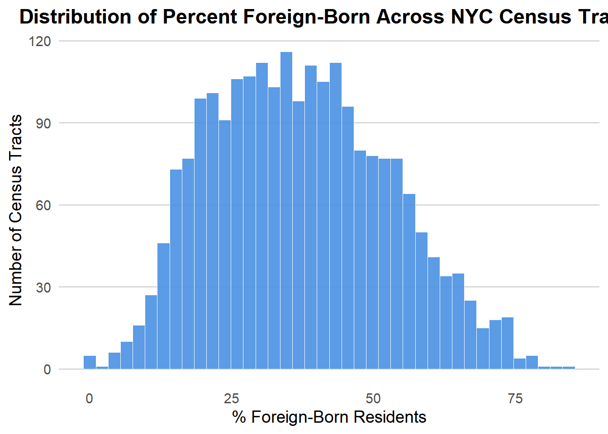
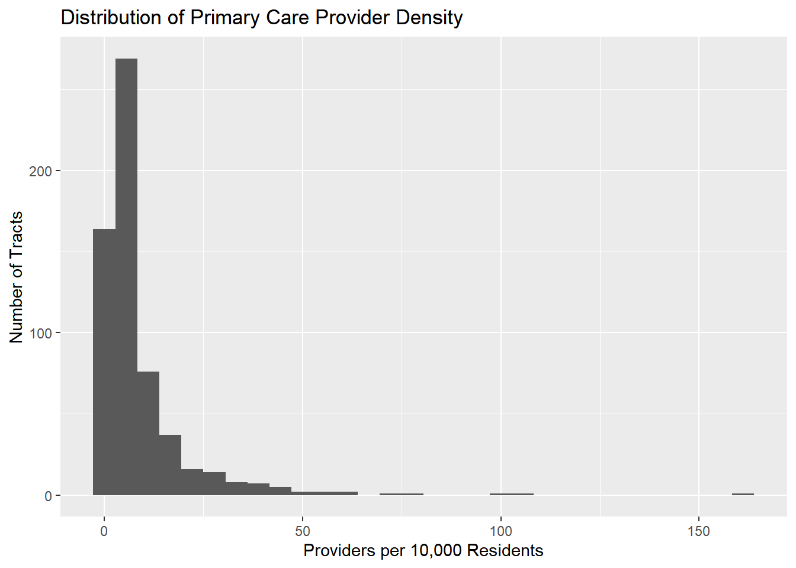
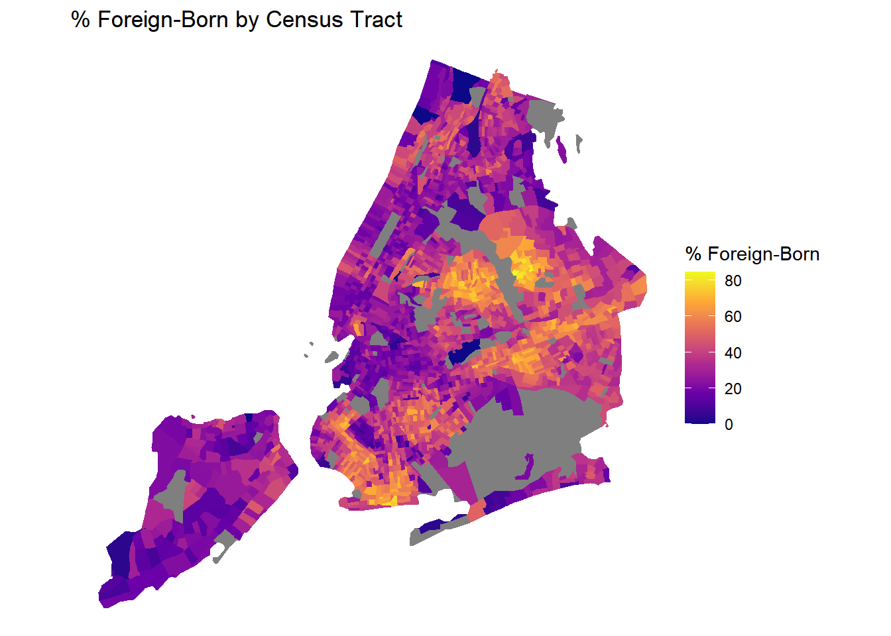
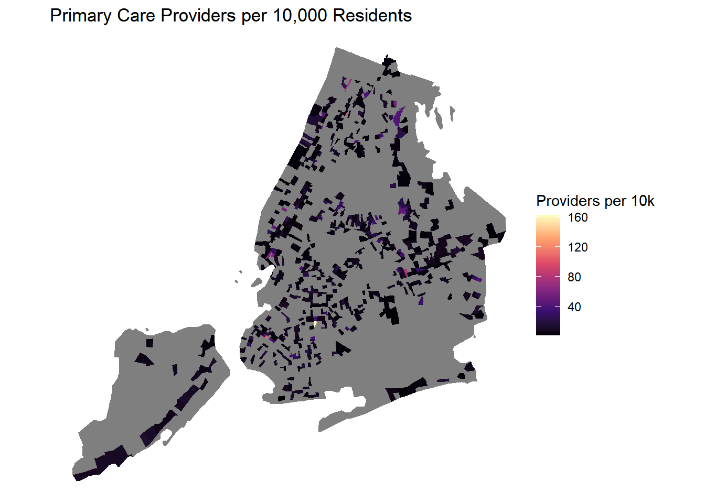
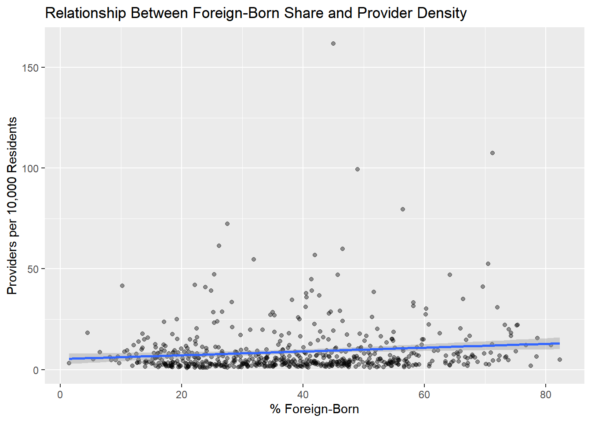

How does the percentage of foreign-born residents relate to healthcare access in NYC?
INTRODUCTION
New York City is home to one of the largest immigrant populations in the world. More than 36% of NYC residents are foreign-born, and in many neighborhoods, immigrants make up over half of the local population. Despite the city’s extensive healthcare infrastructure, access to providers is not evenly distributed across space. Immigrant dense areas particularly in the Bronx, Northern Manhattan, and Central Brooklyn often face fewer primary care options, longer travel times, and fragmented care.
This project investigates the following Specific Question (SQ):
How does the percentage of foreign-born residents relate to local healthcare access at the census tract level in NYC?
This SQ directly contributes to the broader Overarching Question (OQ) for the group project:
How does geographic access to healthcare facilities vary across NYC, and what socioeconomic disparities contribute to these differences?
By analyzing provider locations, census tract demographics, and population denominators, this report focuses specifically on whether immigrant communities face measurable disadvantages in healthcare access, and whether these patterns persist after adjusting for population size.
DATA ACQUISTION AND CLEANING
This analysis combines three data sources:
(1) NYC REACH (Primary Care Providers)
A directory of primary care sites across NYC, containing:
provider names
practice addresses
ZIP codes
specialty information
Geocoding was required to convert addresses into usable longitude–latitude coordinates.
(2) US Census American Community Survey (ACS 2023 5-year)
Pulled using the tidycensus package and Census API, retrieving:
total population
foreign-born population
census tract geometries
These were used to calculate:
% foreign-born per tract
population denominators for provider density
(3) NYC Health Center Districts (Local Government Data)
Used for spatial context and optional mapping overlays.
All datasets were processed in R under a reproducible Quarto pipeline.
Show/Hide Code
library(gt)library(tidyverse)library(readxl)library(sf)library(janitor)library(scales)library(ggplot2)reach <-read_excel("NYC_REACH_Members_20251102.xlsx")districts <-read_excel("Health_Center_Districts_20251102.xlsx")nycha <-read_excel("Directory_of_NYCHA_Community_Facilities_20251102.xlsx")# Load precomputed datasets (NO API, NO GEOCODING)foreignborn_clean <-readRDS("foreignborn_clean.rds")provider_counts <-readRDS("provider_counts.rds")provider_density <-readRDS("provider_density.rds")# Previewforeignborn_clean %>%st_drop_geometry() %>%slice(1:10) %>%gt()
GEOID
NAME
total_popE
pct_foreign_born
36005023502
Census Tract 235.02; Bronx County; New York
4284
47.31559
36005013500
Census Tract 135; Bronx County; New York
3295
25.15933
36005009200
Census Tract 92; Bronx County; New York
5675
38.41410
36005005400
Census Tract 54; Bronx County; New York
5306
44.77949
36005036501
Census Tract 365.01; Bronx County; New York
4721
37.64033
36005044902
Census Tract 449.02; Bronx County; New York
2303
17.45549
36005017500
Census Tract 175; Bronx County; New York
6444
24.08442
36005021900
Census Tract 219; Bronx County; New York
1022
37.27984
36005007400
Census Tract 74; Bronx County; New York
3281
10.11887
36005022000
Census Tract 220; Bronx County; New York
1901
30.82588
Show/Hide Code
provider_counts %>%slice(1:10) %>%gt()
GEOID
providers
36005002002
1
36005002500
3
36005004300
4
36005005002
1
36005005400
1
36005005902
5
36005006500
6
36005007000
1
36005007200
17
36005007900
1
Show/Hide Code
provider_density %>%slice(1:10) %>%gt()
GEOID
providers
total_popE
providers_per_10k
36005002002
1
3689
2.710762
36005002500
3
5460
5.494505
36005004300
4
5041
7.934934
36005005002
1
6338
1.577785
36005005400
1
5306
1.884659
36005005902
5
3044
16.425756
36005006500
6
5182
11.578541
36005007000
1
4201
2.380386
36005007200
17
5371
31.651462
36005007900
1
6987
1.431229
EXPLORATORY DATA ANALYSIS (EDA)
In this section, I explore how foreign-born population shares and provider supply vary across NYC tracts, and whether there are visible patterns suggesting disparities in healthcare access for immigrant communities.
Show/Hide Code
library(tidyverse)library(sf)foreignborn_clean %>%st_drop_geometry() %>%ggplot(aes(x = pct_foreign_born)) +geom_histogram(bins =40,fill ="#4A90E2",color ="white",alpha =0.9,linewidth =0.3 ) +labs(title ="Distribution of Percent Foreign-Born Across NYC Census Tracts",x ="% Foreign-Born Residents",y ="Number of Census Tracts" ) +theme_minimal(base_size =14) +theme(plot.title =element_text(face ="bold", hjust =0.5),panel.grid.minor =element_blank(),panel.grid.major.y =element_line(color ="grey85"),panel.grid.major.x =element_blank() )

The histogram shows how the percentage of foreign-born residents is distributed across NYC census tracts. Most tracts fall between 20% and 45% foreign-born, which means immigrant communities are common throughout the city, not just concentrated in a few neighborhoods. There are very few tracts with extremely low or extremely high foreign-born percentages. This spread is important because it suggests that if healthcare access varies with immigrant presence, those differences could affect a large share of NYC residents, not just isolated areas.
Distribution of Provider Density
Show/Hide Code
library(tidyverse)library(sf)provider_density %>%ggplot(aes(x = providers_per_10k)) +geom_histogram(bins =30) +labs(title ="Distribution of Primary Care Provider Density",x ="Providers per 10,000 Residents",y ="Number of Tracts")

The distribution of provider density across NYC census tracts is extremely skewed, with most neighborhoods having very low levels of primary care availability typically fewer than 5 providers per 10,000 residents. Only a small number of tracts have unusually high provider densities, which appear as outliers on the far right of the distribution. This pattern suggests that access to primary care is not evenly spread across the city and that large portions of the population live in areas with limited provider presence. The heavy concentration of low-density tracts highlights the importance of investigating whether certain demographic groups such as foreign-born residents are more likely to live in these underserved areas.
This summary provides a baseline sense of how typical tracts look in terms of immigrant population and provider supply.
Visualizations
Map: Percent Foreign-Born by Census Tract
Show/Hide Code
map_data <- foreignborn_clean %>%left_join(provider_density %>%select(GEOID, providers_per_10k),by ="GEOID")ggplot(map_data) +geom_sf(aes(fill = pct_foreign_born), color =NA) +scale_fill_viridis_c(option ="plasma") +labs(title ="% Foreign-Born by Census Tract",fill ="% Foreign-Born") +theme_void()

This map shows how the foreign-born population is distributed across NYC census tracts. Immigrant presence is clearly not uniform, Queens and parts of Brooklyn stand out with the highest concentrations, often exceeding 50–70% foreign-born in several tracts. Northern Manhattan and sections of the Bronx also show strong immigrant clusters, while many tracts in Staten Island and parts of Southern Brooklyn have much lower percentages. This geographic pattern highlights how immigrant communities form distinct pockets across the city, and it sets the foundation for analyzing whether these same areas experience different levels of healthcare access. Seeing these spatial concentrations makes it easier to understand where disparities may emerge once provider density is compared across the same tracts.
Map: Provider Density by Census Tract
Show/Hide Code
ggplot(map_data) +geom_sf(aes(fill = providers_per_10k), color =NA) +scale_fill_viridis_c(option ="magma") +labs(title ="Primary Care Providers per 10,000 Residents",fill ="Providers per 10k") +theme_void()

This map illustrates how primary care provider density varies across NYC census tracts. The visual pattern shows that most neighborhoods have very low provider availability, with only a few tracts mostly in parts of Manhattan and limited areas of Brooklyn showing higher concentrations of providers. Large sections of the Bronx, Queens, and Staten Island remain noticeably light on the map, indicating fewer providers per 10,000 residents. The contrast between high- and low-density areas highlights the uneven distribution of healthcare access across the city. When compared to the spatial pattern of foreign-born residents, this map raises important questions about whether immigrant communities are concentrated in parts of the city that have fewer primary care resources.
Scatterplot: Provider Density vs % Foreign-Born
Show/Hide Code
ggplot(analysis_data, aes(x = pct_foreign_born, y = providers_per_10k)) +geom_point(alpha =0.4) +geom_smooth(method ="lm", se =TRUE) +labs(title ="Relationship Between Foreign-Born Share and Provider Density",x ="% Foreign-Born",y ="Providers per 10,000 Residents")

The scatterplot shows the relationship between the percentage of foreign-born residents in a census tract and the number of primary care providers per 10,000 residents. The points are widely dispersed but mostly clustered near the lower end of provider density, indicating that the majority of tracts regardless of their foreign-born share have relatively few available providers. The fitted regression line is almost flat, suggesting that there is little to no raw linear relationship between immigrant concentration and provider availability when looking at the bivariate data alone. However, the presence of extreme outliers and highly skewed provider distributions makes it clear that simple visual correlation may not fully capture underlying disparities. This reinforces the need for a multivariable regression model to determine whether foreign-born share is associated with lower healthcare access after adjusting for population size and other factors.
METHODS
This analysis links primary care provider locations to demographic characteristics at the census tract level to evaluate whether immigrant concentration is associated with local healthcare access. Provider addresses from NYC REACH were geocoded and converted into spatial point features. These were spatially joined to ACS census tract geometries to assign each provider to a tract. Provider availability was operationalized as providers per 10,000 residents, calculated by dividing the provider count by the tract population and standardizing to a common rate denominator.
ACS 2023 5-year estimates were used to compute the percentage of foreign-born residents in each tract. Datasets were merged by GEOID to create a unified analytic file. Exploratory analysis included histograms, summary tables, and spatial visualizations of foreign-born concentration and provider density. A simple linear regression model was used to assess the bivariate association between foreign-born percentage and provider availability, chosen as a baseline model to reflect the structure of the specific research question. This model provides an initial assessment of whether immigrant concentration alone is predictive of healthcare access prior to extending the analysis to multivariable models in the group project.
REGRESSION ANALYSIS
Show/Hide Code
model_simple <-lm(providers_per_10k ~ pct_foreign_born, data = analysis_data)summary(model_simple)
Call:
lm(formula = providers_per_10k ~ pct_foreign_born, data = analysis_data)
Residuals:
Min 1Q Median 3Q Max
-10.805 -6.093 -3.951 0.872 152.440
Coefficients:
Estimate Std. Error t value Pr(>|t|)
(Intercept) 5.25601 1.32992 3.952 8.66e-05 ***
pct_foreign_born 0.09439 0.03179 2.969 0.0031 **
---
Signif. codes: 0 '***' 0.001 '**' 0.01 '*' 0.05 '.' 0.1 ' ' 1
Residual standard error: 13.01 on 605 degrees of freedom
Multiple R-squared: 0.01436, Adjusted R-squared: 0.01273
F-statistic: 8.816 on 1 and 605 DF, p-value: 0.003105
The regression results show that the percentage of foreign-born residents in a census tract has a statistically significant but extremely small association with primary care provider density. The coefficient for foreign-born share is 0.094, indicating that even a 10-point increase in immigrant population corresponds to less than one additional provider per 10,000 residents—an effect that is not meaningful in practice. Although the relationship is statistically significant (p = 0.003), the R² of 0.014 shows that foreign-born share explains only about 1% of the variation in provider density across NYC, meaning that healthcare access is driven by many other factors. The large residual spread and presence of outliers further indicate that provider availability is highly uneven and not well predicted by immigrant concentration alone. Overall, the model suggests that there is no meaningful linear relationship between foreign-born percentage and provider density, reinforcing the need for multivariable models to understand broader structural disparities in healthcare access.
FINDINGS
Foreign-born residents make up a large share of NYC’s population across all boroughs, with census tracts often ranging between 20% and 45% foreign-born. This demographic pattern is widespread, appearing in Queens, Brooklyn, Northern Manhattan, and sections of the Bronx. Provider density, however, is far more uneven. Most tracts have fewer than five primary care providers per 10,000 residents, and only a small number of areas—mostly in or near Manhattan have substantially higher availability.
The spatial comparison of foreign-born concentration and provider density reveals several mismatches. While not all immigrant dense neighborhoods lack providers, many areas with high immigrant populations coincide with some of the lowest levels of primary care availability. This pattern is particularly visible in the Bronx and parts of Queens, where immigrant communities often live in structurally under-resourced neighborhoods.
Despite these spatial patterns, the regression analysis shows only a very weak statistical association between the percentage of foreign-born residents and provider density. The foreign-born coefficient is statistically significant but extremely small, and the model explains only about 1% of provider density variation. This means immigrant concentration alone does not meaningfully predict where providers locate. Provider availability appears to be shaped by broader structural factors economic conditions, historic investment, land use, and institutional presence—rather than demographic share alone.
Even so, the underlying geography matters. Because many immigrant communities reside in areas of the city already characterized by limited provider supply, they may still experience disproportionate barriers to care. The descriptive and spatial results suggest that immigrant neighborhoods often overlap with low-access areas, even when foreign-born share itself is not the causal driver. This distinction is important for public health policy: lack of direct statistical association does not mean absence of impact. Instead, immigrant communities may be indirectly affected through their concentration in historically underserved neighborhoods.
LIMITATIONS
Several limitations shape this analysis. The NYC REACH dataset includes many, but not all, primary care providers; private practices, specialty clinics, and urgent care centers may be missing, causing underestimates of access in some tracts. Provider listings also change over time, while this project uses a cross-sectional snapshot.
Geocoding introduces uncertainty, especially for clinics located in multi-building complexes or addresses that share parcels with residential or commercial units. Small shifts in geocoded coordinates can move providers across tract boundaries, affecting local counts.
The ACS dataset carries sampling error at the census tract level, particularly for immigrant populations. Foreign-born estimates may be imprecise in low-population tracts. Additionally, this analysis uses only a bivariate model, which does not account for poverty, housing patterns, neighborhood density, transportation access, or insurance acceptance—all factors that strongly influence healthcare access.
Finally, residents do not necessarily seek care within their own census tract. NYC’s mobility patterns mean that spatial mismatches between residence and provider location may not reflect actual care-seeking behavior.
REPRODUCIBILITY NOTES
All data cleaning, geocoding, and analysis were conducted in R within a Quarto environment to ensure full reproducibility. Key packages included tidyverse, sf, tidycensus, tidygeocoder, and gt. External datasets were stored locally and loaded via RDS files to maintain consistent results regardless of API availability. All code used to generate tables, figures, and models appears directly within this document.
CONCLUSION
This analysis examined whether the percentage of foreign-born residents in a census tract is associated with primary care access in New York City. While immigrant communities are geographically widespread, primary care provider availability is far more uneven. The regression results show no meaningful linear relationship between foreign-born share and provider density, but spatial patterns indicate that immigrant neighborhoods often coincide with areas of low provider supply.
These findings suggest that disparities in healthcare access stem from structural forces rather than demographic concentration alone. Neighborhood socioeconomic conditions, historical investments, housing patterns, and the distribution of major health systems all help shape where providers locate. Addressing inequities in immigrant neighborhoods requires policies that increase provider capacity in underserved areas and improve cultural and linguistic accessibility.
REFLECTION
Completing this project highlighted how spatial methods reveal patterns not visible in simple summary statistics. Working with geocoded provider data and tract-level demographics strengthened my understanding of how neighborhood characteristics shape access to essential services. The analysis also showed the limits of relying on single demographic indicators to explain complex patterns like healthcare access. This project reinforced the importance of multivariable modeling and careful data interpretation—skills that will directly support the upcoming group assignment.
REFERENCES
NYC Open Data. (2024). NYC REACH primary care provider directory [Data set]. https://data.cityofnewyork.us/
NYC Open Data. (2024). NYC Health Center Districts [Data set]. https://data.cityofnewyork.us/
U.S. Census Bureau. (2024). American Community Survey 2019–2023 5-year estimates [Data set]. https://www.census.gov/programs-surveys/acs/